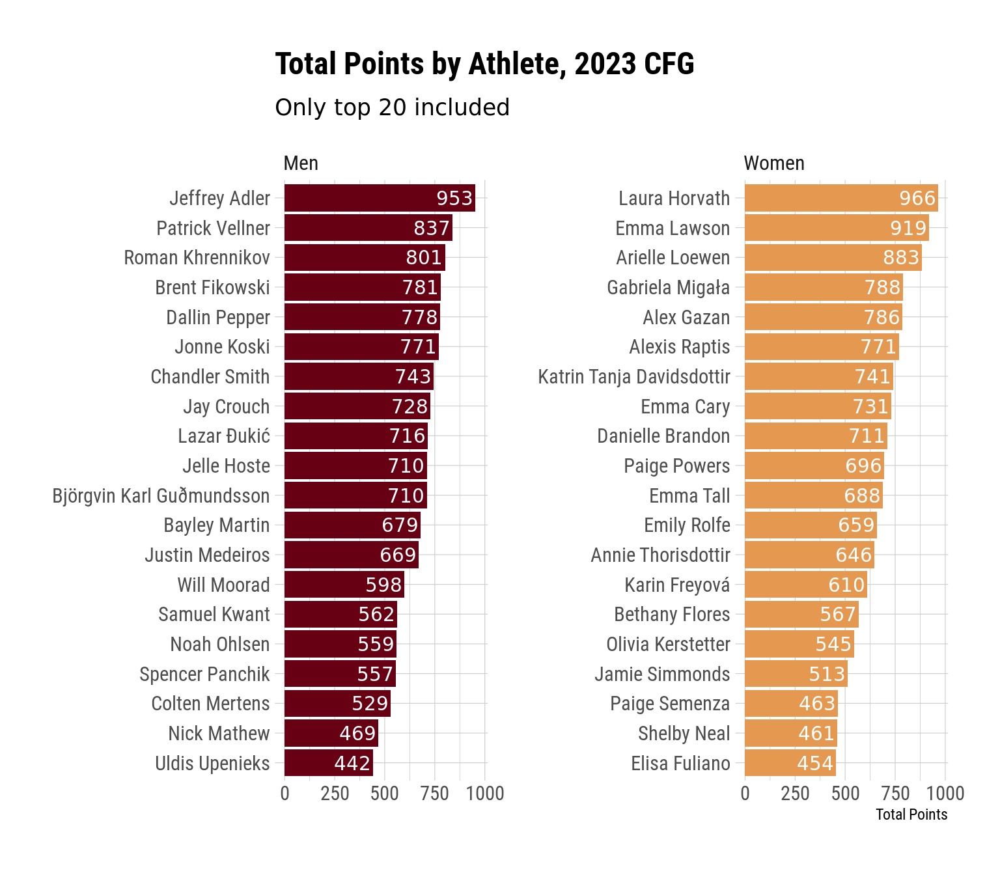
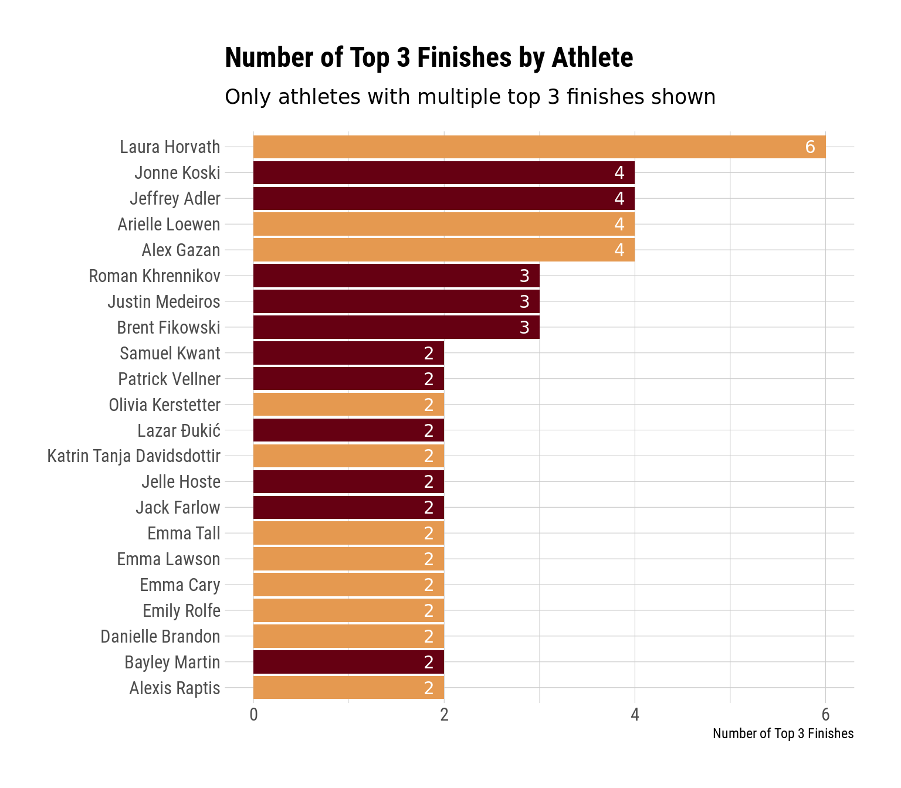

What an amazing Crossfit Games we just had! Other venues have documented all of the storylines leading into the games better than I could, so I’m not going to recap those here. But suffice to say that there was a lot of hype going into the Games, and they lived up to all of that hype and then some.
The point of this blog post is to prolong the Games-weekend high by digging into the available data a little bit and exploring how the weekend shook out. If you’re into R and want to use this data yourself, check out my (work-in-progress) {crossfitgames} package, which will help you retrieve and process data from the Crossfit API.
By default, the code in this post is folded up (you can click to expand it), and I won’t necessarily explain what it does. But again, if you’re into that sort of thing, you can view it.
So let’s get into the data.
Code
library(crossfitgames)library(harrypotter) # for colorslibrary(tidyverse)library(hrbrthemes)library(gt)theme_set(theme_ipsum_rc())options(ggplot2.discrete.fill =list(hp(n =2, option ="HermioneGranger") ),ggplot2.discrete.color =list(hp(n =2, option ="HermioneGranger") ))# get men's datamen_23 <-games_leaderboard(2023, division ="men")# get women's datawomen_23 <-games_leaderboard(2023, division ="women")# use extractor functions to get final leaderboard and by-workout resultsmen_lb <-extract_final_leaderboard(men_23) |>mutate(division ="Men")women_lb <-extract_final_leaderboard(women_23) |>mutate(division ="Women")# by workout resultsmen_workout_df <-extract_workout_results(men_23) |>mutate(division ="Men")women_workout_df <-extract_workout_results(women_23) |>mutate(division ="Women")# combining men and women dfslb_df <-bind_rows(men_lb, women_lb)workout_df <-bind_rows(men_workout_df, women_workout_df)
Overall Points
This isn’t the most exciting graph, but it makes sense to start by looking at the overall points. If you followed the Games coverage over the weekend, though, you probably know all of this already.
Code
lb_df |>filter(rank <=20, rank >0) |>ggplot(aes(x = score, y =fct_reorder(athlete, score), fill = division)) +geom_col() +geom_text(aes(label = score, x = score -10), hjust =1, color ="white") +facet_wrap(vars(division), scales ="free_y") +labs(x ="Total Points",y =NULL,title ="Total Points by Athlete, 2023 CFG",subtitle ="Only top 20 included" ) +theme(legend.position ="none" )

One thing that sticks out to me when looking at this is how close places 4-6 were to one another on both the men and the women’s sides. Only 17 points separated Gabi Migala from Alexis Raptis, and only 10 points separated Brent Fikowski from Jonne Koski.
Number of Top 3 Finishes
Next, let’s take a look at the number of top 3 finishes by all of our athletes. To preserve some space, I’m only going to include those athletes with multiple top 3 finishes.
Code
workout_df |>filter(workout_place <=3) |>count(division, athlete) |>filter(n >1) |>ggplot(aes(x = n, y =fct_reorder(athlete, n), fill = division)) +geom_col() +geom_text(aes(label = n, x = n - .1), hjust =1, color ="white") +labs(y =NULL,x ="Number of Top 3 Finishes",title ="Number of Top 3 Finishes by Athlete",subtitle ="Only athletes with multiple top 3 finishes shown" ) +theme(legend.position ="none" )

So there are a few things that stand out to me here:
Laura absolutely crushed it. She had 6 total top 3 finishes (5 of which were wins), which was 2 more than the next-closest person.
Emma Lawson, even though she ended up in 2nd and led for a decent amount of the competition, only had 2 top 3 finishes.
Justin Medeiros still had 3 top 3 finishes, despite placing 13th overall, which just goes to show how damaging a few very bad finishes can be.
Event Placement Variability
Medeiros’s performance provides a nice segue into the next thing we’ll look at – variability. That is, to what extent were athletes consistent in their finishes. The plot below shows athletes average event placement as a point, and it shows the standard error of this estimate (the variability) as bars extending around the point. The wider the bars, the more variable (less consistent) the athlete was in their finishes.
One thing to note here is that the y-axes are sorted by final leaderboard position, whereas the position of the point on the x-axis for each athlete is the average event finish. If all events are weighted equally, these would points cascade downward and outward – the average event placement would increase as you go down the leaderboard. But since the point gaps between places increase as athletes are cut, it’s possible for athletes to have higher average event finishes and yet still finish better on the leaderboard. This is the case for athletes who do better on Saturday and Sunday than they did on Thursday and Friday. We can see this with Gabi Migala and Pat Vellner. Inversely, athletes who do worse on Saturday and Sunday will have lower average event finishes relative to their overall place. We can see this with Chandler Smith and Roman Khrennikov (who didn’t do well on Sunday for obvious reasons).
Beyond that, though, it’s interesting to look at the width of some of these error bars. On the women’s side, we can see how narrow Emma Lawson’s bars were, showing that she consistently finished around 7th place in events. Likewise for Chandler Smith on the men’s side – he seems much more consistent than many of the other top 20, and I’m not sure anyone would say consistency was Chandler’s vibe before this year. It’s also probably worth mentioning that Roman’s performance would (probably) have been much more consistent had he not broken his foot.
Inversely, we can see that some athletes were very inconsistent. For instance, Justin Medeiros, Pat Vellner, and Sam Kwant on the men’s side, and Katrin, Emma Cary, and Olivia Kerstetter on the women’s side. This all makes sense – Justin, Pat, and Sam all had a few terribly events, but as we saw earlier they were also top 3 in multiple events. Likewise for Katrin, Olivia, and Emma.
Top 10 Athlete Finishes by Event
The error bars in the above plot tell us something about variability, but we might want to look at the actual event finishes to unpack this variability a bit more. The plot below is a jitter plot, which is basically just a scatter plot with the points jittered a little so they don’t overlap. Since this might be too busy otherwise, I’m going to drop down to just the top 10 athletes in each division here.
Right, so here we can get a better sense of athletes by performances. We can see, for example, that both Katrin and Emma Cary mostly did well, but they had a few events where they bombed. Same thing with Vellner (and probably Medeiros too, if he were displayed here). Jelle Hoste’s finishes appear much more smoothly spread – it’s not like he vacillated between dominating events and bombing them. He won 1 (the 5k), finished a few others in the top 10, finished a few others in the top 20, and then had a handful of worse finishes. We see a similar pattern for Fikowski, Paige Powers, Gabi Migala, and Danielle Brandon.
Placement for Top 5 Athletes Across the Competition
As a penultimate glance at the data, let’s track the overall placement of the eventual top 5 finishers across the competition. I’m going to color the eventual winners in gold and the others in gray, which will make the winners’ trajectories easier to follow and make the graph less busy (although it does make it slightly harder to follow the non-winners’ trajectories).
The first thing that stands out to me is what we all know – Roman dominated most of the men’s competition, and it was a real bummer that he broke his foot. Another thing that stands out to me is that Dallin Pepper made a huge late charge to go from ~14th after event 7 up to 5th at the end of Sunday, which is a lot of ground to make up in 5 events. We can also see Vellner doing Vellner things – pulling himself out of an early hole to eventually take 2nd.
On the women’s side, we can see that Emma Lawson was basically always at or near the top. Laura had a bit of a roller-coaster ride to get back to the top spot, but she ended up there when it mattered. The other thing on the women’s side that jumps out is that Gabi Migala had sort of a similar trajectory as Dallin Pepper – she dug herself into a bit of a hole over the first half of the competition that she climbed out of by the end.
Exploring Laura’s Event Wins
And let’s end with a little bit about Laura Horvath. I’ve been a huge Laura fan since 2018, and I’m so happy for her that she finally got a W this year. I hope this is just the first of many for her, and I truly think she’s a great ambassador for the sport.
All of that said, one of the things you couldn’t help but notice when watching her was how dominant her event wins were. The table below shows her score for each of her event wins as well as the score of the woman who finished in 2nd.
The first 2 wins are absolutely nutzo. Winning by nearly a minute in a ~14 minute event is crazy enough, but then winning by over a minute in a 5 minute event is bonkers. Her next 3 wins don’t quite reach those same levels of insanity, but none of them are particularly close. In a lifting even where 1-5 lbs separated many athletes, Laura won by 23 lbs. And in events 10 and 11, she still won by 18 and 12 seconds, which is a lot (go ahead and count to 12 slowly and see how long it feels).
All in all, I’m pumped for Laura, pumped for Adler (who I didn’t write much about here, but he does seem like a good dude), and pumped for another great Games weekend.
I may dig into some other aspects of this data more in the future – who knows – but for now this is it.